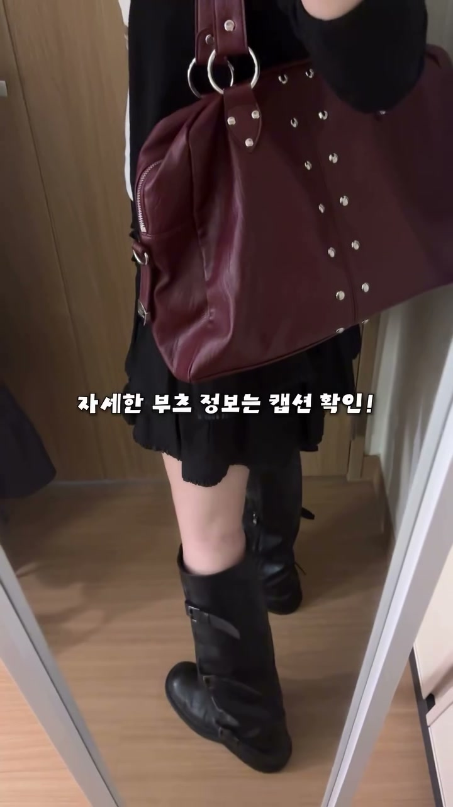

유정님 시트롱 촬영 가이드
아래 6단계 순서로 찍어 주시면 돼요. 컷 전환과 구도는 참고 영상처럼 해 주세요.
촬영 제품
코디 참고다리가 보이게 짧은 하의로 부탁드려요. 짧은 바지에 흰 양말이면 제일 좋아요. 인트로에서만 2~3벌을 빠르게 넘기고, 나머지는 1벌이면 충분해요.
참고 영상
유정님 참고 영상
1썸네일·첫 화면0초
겨울 필수템 키워드로 시작해 주세요

참고 영상처럼 가운데에 큰 제목 한 줄을 넣어 주세요.
썸네일 텍스트 예시 가운데① 겨울 필수템 방한부츠 추천
② 키작녀 겨울 부츠 추천
2인트로0–2.5초
2~3벌 착장을 빠르게 넘겨 주세요
같은 구도로 가슴 아래부터 부츠 끝까지 나오게 찍어 주세요.
짧은 하의에 양말이 보이게 입어 주세요(흰 양말 추천).
3신발 착장 장면인트로 바로 다음 · 약 2.5–5.5초 · 둘 중 하나
신은 모습 + 자막, 또는 랭킹 캡처 중 편하신 걸로


4신발 디테일 한번 보여주기신은 모습 바로 다음 · 약 5.5–8초
신발 디테일 한번 보여주기
디테일신발이 잘 보이게 화면에 크게 2초 정도 보여 주세요. 안쪽 퍼를 보여 주셔도 좋아요.
화면 글자안에는 빵실빵실 퍼 달림
5신발 강조 컷약 8–20초
서서 보여주는 컷 → 앉아서 보여주는 컷
신발이 화면 가운데에 크게 나오게 해 주세요. 컷마다 2~3초씩, 디테일이나 굽 높이를 한 줄 자막으로 넣어 주시면 좋아요.
코디는 1벌이면 충분해요. 바꾸실 때는 착장마다 1~3초 정도면 돼요.
6마무리마지막 2–3초 · 전체 약 20초
댓글 안내 + 혜택

부츠를 신고 서 있는 모습을 2~3초 보여 주세요.
화면 자막댓글에 ‘○○’ 남겨 주시면
제품 링크 보내드릴게요
(또는: 20% 할인코드랑 제품 링크 보내드릴게요)
제품 링크 보내드릴게요
(또는: 20% 할인코드랑 제품 링크 보내드릴게요)
자세한 내용은 캡션 확인
캡션에 꼭 넣어 주세요댓글 남겨 주시면 20% 할인코드랑 제품 링크 보내드려요!
!부탁드려요
이것만 피해 주세요
신발이 작게 보이거나 가려지지 않게 부탁드려요. 전신도 괜찮아요. 첫 화면부터 신발 모양이 보이게 거리와 하의 길이만 맞춰 주세요. 얼굴이 나올 땐 얼굴만 오래 비추지 않게 해 주세요.
상자 열기·포장 뜯기는 빼고, 첫 화면으로 바로 시작해 주세요.
가방이나 옷이 신발을 가리지 않게 해 주세요. 화면이 어둡거나 배경이 복잡하면 자리를 옮겨서 테스트 컷을 먼저 찍어 보셔도 좋아요.
보내 드린 제품은 자르거나 안창을 빼지 말아 주세요.
다른 신발 브랜드 이름·로고·상자, 유명인 이름, 저작권 있는 음원은 넣지 말아 주세요. 음악은 따로 안내가 없으면 빼셔도 괜찮아요.
촬영 전 준비
준비물 · 촬영 전 연락
- 원하시는 색상·사이즈를 알려 주세요.
- 폰 받침대나 삼각대, 양말, 부츠가 잘 보이는 코디 한 벌을 준비해 주세요.
- 어떻게 찍으실지 몇 줄이나 말로 먼저 알려 주세요. 평소 쓰시는 기획안 양식도 좋아요. 확인 답변 드린 뒤 촬영해 주시면 돼요.
- 초안 전달 날짜·게시 날짜·댓글 키워드를 같이 정해요.
- 촬영 전에 첫 화면을 짧게 찍어 보내 주시면 같이 봐 드릴게요.
- 게시하실 때 @chaakan_kr 공동작업자 초대가 가능한지 알려 주세요.
연락은 가이드를 받으신 메일이나 대화방으로 편하게 주세요.